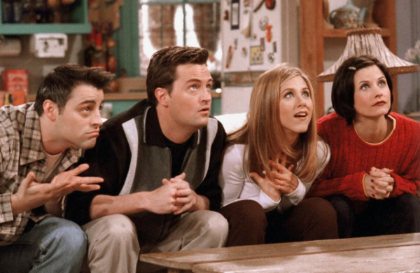
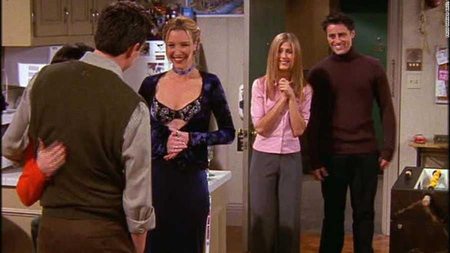
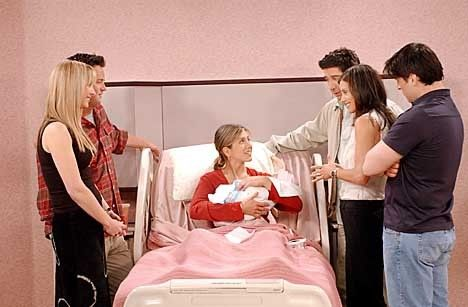

The first season introduces the six characters who live in New York City. Rachel arrives at the Cafe where all the others are gathered, dressed as a bride, after having left her fiance at the altar. She decides to leave her parents' house and move in with Monica, who accepts it.
Ross is suffering because his marriage is over and his wife left him for another woman. He laters discovers that she is pregnant with his baby.
Monica works at a restaurant and is Ross' sister.
Phoebe is a free-spirit masseuse.
At the end of the season, Rachel finds out Ross has a crush on her, and decides to give him a chance. Ross, however, went to China and there he met Julie, who he decided to date.
Season 2
After discovering that Ross has now a new girlfriend, Rachel suffers because she wanted to be with him. Ross finds out about Rachel's feelings and decides to break up with Julie and open up with Rachel, only to fail due to having done a list with pros and cons about her and Julie. Later, they get together after a video of her prom show how much he cared for her.
Monica starts to work as a waitress at a 1950s-style dinner after being fired from her previous job for accepting gifts from a supplier. In need of money, she also starts a side work as a cater, leading her to reconnect with Richard, a friend of her father, and they fall for each other. They eventually break up, because Monica wants kids and Richard doesn't.
Joey starts playing a neurosurgeon in a fictional soap opera, "Days of Our Lives", and leaves the apartment he shared with Chandler. Not being able to pay for the new apartment, he moves back with Chandler.
Season 3
Chandler is in a serious relationship with Janice, and dates her for several episodes. However, after finding out that Janice kissed her ex-husband, with whom she has children, he decides to leave her not to break her family.
Rachel confronts her perspectives in life and decides to quit her job at Central Perk and gets a job at Bloomingdales. Her professional development adds a burden on her relationship with Ross, that, after a fight, and believing that "they were on a break", sleeps with the girl from the "Xerox place". Rachel then breaks up completely with him.
Phoebe decides to look for her father, and discovers she has a half-brother, Frank Jr. Monica dates a millionaire Pete Becker, but theu break up because he wants to win a Ultimate Fighting Championship and she doesn't want to watch him hurt himself.
Ross starts dating Bonnie, a friend of Phoebe. Rachel, jealous, try to sabotage their relationship. The season ends with Ross having to decide between Bonnie and Rachel.
Season 4

Season 4 - episode 20: The one with the embrios
Rachel and Ross briefly reconcile, but they end things up again. Ross insists that they were on a break, while Rachel says they weren't so he cheated on her.
Joey and Chandler get involved in a romantic triangle, when Ross starts dating Kathy, but Chandler has a crush on her. They have a really bad fight, and Joye even try to leave the apartment to go back living with his parents. Chandler, however, makes whatever it takes to prove that his friendship is the most important thing. Turns out that Kathy cheats on Chandler as well.
Monica and Rachel loose the apartment for the guys in a bet, and they exchange places. This drives them crazy, while the guys love their new place.
Phoebe's brother, Frank Jr., marries his math teacher, and they want to have a kid. Since his wife is too old to get pregnant, they ask Phoebe to have their baby. She accepts it.
Rachel starts dating a Bloomingdale's client, Joshua, and while trying to get his attention, she ask Ross to go out with her boss' niece, Emily. They end up deciding to get married, in London. Joshua breaks up with Rachel after she's tried to rush their relationship. She then realizes she still has feelings for Ross, and goes after him in London.
The season ends at Ross and Emily's wedding, with Ross saying Rachel's name at the altar instead of Emily.
Season 5

Monica and Chandler go public.
Ross and Emily get married, but feeling humiliated, she runs from the reception. Rachel declares herself to Ross, but seeing the whole situation, tells him to work on his marriage. Phoebe has his brother kids, that turn out to be triplets. Chandler and Monica start a relationship in London, and they try to hide from their friends. But one by one, they find out.
Emily tells Ross that if he doesn't stop talking to Rachel, she won't move to New York. She realizes she doesn't trust him anymore and ask for a divorce. Ross, after having moved to a new apartment for Emily, finds himself with nowhere to live and ends up in Joey and Chandler's apartment.
Phoebe starts a relationship with a cop, Gary.
Monica and Chandler go public and decide to get married in Las Vegas, but change their minds after seeing Ross and Rachel leave the chapel, completely drunk, and newly married.
Season 6
Ross and Rachel's marriage proves to be a drunken mistake, and Ross promisses to get an annulment. However, thinking that this is his third failed marriage, Ross doesn't go through with it and hide the fact from Rachel. He starts working as a professor at New York University.
Monica and Chandler decide to move in togehter, and Rachel then goes live with Phoebe. Joey gets a new rommate, but it doesn't work after they start a fling and the rommate admits she doesn't like his friends. Having difficulty in paying his bills, Joye starts working at Central Perk. He lands a part in a new TV series and is called back to "Days of Our Lives"
Ross starts dating a student, Elizabeth. Rachel starts dating Elizabeth's father, but he proves to be more than what she can handle. Ross and Elizabeth break up due to the age difference.
Phoebe's apartment catches on fire, and Phoebe goes live with Chandler and Monica, while Rachel goes live with Joey.
Chandler plans to propose to Monica, but only to see his plans ruined by Monica's old boyfriend, Richard, who shows up at the restaurant where they are having dinner. Trying to make Monica think he doesn't want to get married, Chandler panics when he thiks this made Monica go after Richard. He later find out that she was waiting for him at home, and she proposes to him.
Season 7
The season shows a lot of Chandler and Monica's wedding plans.
Phoebe's apartment is ready but has now only one bedroom, so Rachel stays permanently living with Joey.
Rachel get promoted at Ralph Lauren and hires an assistant, Tag Jones. They soon start a relationship. They break up at her 30th birthday, when she realizes he is too immature and young for her.
Chandler panics right before the wedding and try to hide, but he's found by Phoebe and Ross, who help him to face his fears of getting married because of his parents.
Phoebe finds a pregnancy test at Monica's, with a positive result, and later it's shown that this was a test that Rachel took.
Season 8

Season 8 - Rachel has her baby
Rachel takes another test to confirm she really is expecting. Rachel decides to have the baby but doesn't tell Monica and Phobe who the father is. Ross is eventually revealed to be the father, and the season evolver around her pregnancy.
Ross begins dating Mona, who is Monica's co-worker from Allesandro's. This, however, doesn't last long, givent that Bonnie can't handle the whole situation involving Rachel and Ross.
Joey realizes he is starting to have a crush on Rachel, and trying to move on, tell her to move in with Ross, so he can be closer to her during this time. He later tells Ross about his feelings for Rachel. Ross gets angry at first, but ends up accepting. When Joey tells Rachel, hoerver, she says she doesn't feel the same thing and they decide to stay friends.
Rachel goes into labor, and at the hospital, Ross' mom gives him a ring, telling him to propose to Rachel. In a comic stuation, Rachel thinks Joey proposed to her and accepts it, afraind of being alone.Meanwhile, Ross intends to ask Rachel if she wants to resume their relationship.
Season 9
Season nine begins with Ross and Rachel cohabitating with their daughter Emma, after Joey and Rachel clear up the proposal misunderstanding. Chandler and Monice are trying to have a baby, but no success. Chandler, while sleeping during a work meeting, agrees to move to Tulsa, to Monica's dispair.
After spending Christmas away from Monica, Chandler decides to quit his job and start over working with something he likes.
Monica and Chandler discover their chances of having a child on their own are low, and decide to adopt. Phoebe starts dating Mike Hannigan, but they break up because he doesn't want to get married ever. Phoebe reconnects with her ex-boyfriend, David (from season one), but she can't really forget Mike.
During a trip to Barbados, Monica calls Mike to tell him to go after Phoebe, who is about to be proposed by David. He then goes after Phoebe, and proposes to her, but she says no because she didn't need a proposal, just the assurance that they were going somewhere.
Rachel develops a crush on Joey, but he started dating Charlie, a new paleontology professor who Ross is attracted to. In Barbados, Charlie breaks up with Joey and starts a thing with Ross, and Rachel tells Joey her feelings. They kiss.
Season 10
The last season closes several story lines. Joey and Rachel try to get their relationship to another level, but realize their friendship is too strong for them to be something else.
Phoebe marries Mike, and Chandler and Monica are chosen by Erica to be the parent of her child. Thinking about their future, Chandler and Monica decide to leave New York and move to the suburb.
Rachel gets fired from Ralph Lauren after being spotted by her boss having an interview for Louis Vitton. On her way out of Ralph Lauren, she meets Mark, who says might have a job offer for her. The job offer, however, is in Paris.
When Erica goes into labor, they find out that she wasn't pregnant with only one child, but with twins.
Ross goes after Rachel at the airport, to declare himself to her, but she decides to go away anyway. Later, at his apartment, Ross check his voice mail, and hears Rachel trying to get out of the plane. Rachel manages to go after him, and they end up together.